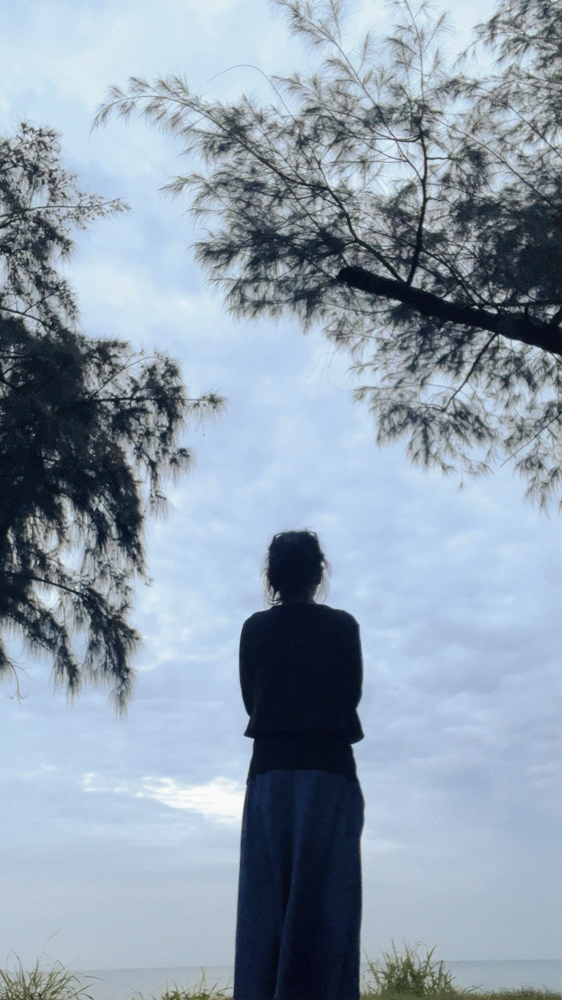
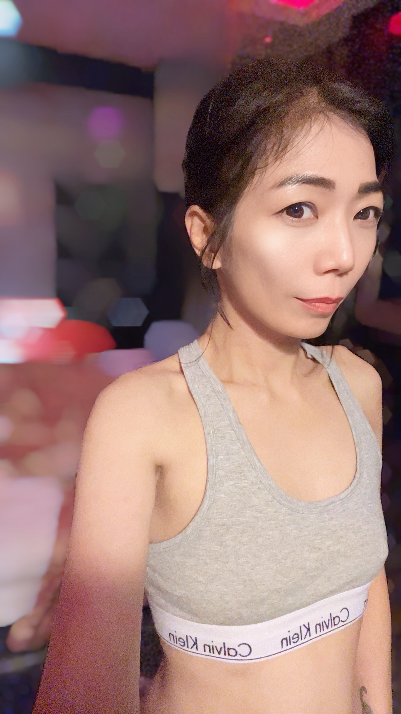

《微光・之上》
蘇純｜無限旅程
蘇純｜無限旅程
值得，所以不將就。
感謝深深，蘇純上線。
↓

曾經以為，
這圈子很簡單。
後來才明白，
深的從來不是圈子，
而是人性。
感謝曾經的深深，
才有現在的蘇純。

自己的世界，
照自己的方式生活。
不迎合。
但很真。


153 / 40 / 32B / 45+
骨感偏瘦、敏感型。
沒有固定 SOP 流程，
不刻意迎合，
也不虛假奉陪。
感覺是雙向的，
相處也是。
適合的人，
自然會懂。
感受、信任跟尊重，
一直都很重要。
雙向自然互動，
相處舒服，
彼此才會開心。
《相幹》
要的是舒服、享受過程。
滿足身體，也滿足心理。
比起說什麼，
做什麼、給什麼，
才是旅程的重點。
無限旅程，
只留給重視微光旅程的人。
微光場域的流動光影。
這裡的空氣慢下來，
只留下真實的對話與呼吸。
( 現場畫面不定期更換，記錄轉瞬即逝的默契 )
壹｜微光・初見
貳｜微光・稍炙
參｜微光・微醺
肆｜微光・之上
基本互動
進階旅程
( 細節不過度展開，保留想像與空間 )
不喜歡臨時亂改、放鳥。
Line 文字沒有溫度，
只針對重要內容回覆。
感覺跟尊重是互相的。